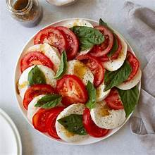

A classic Italian salad made with fresh mozzarella, tomatoes, and basil, dressed with olive oil and balsamic vinegar.

- Fresh mozzarella cheese: 8 oz, sliced into 1/4-inch thick rounds
- Ripe tomatoes: 2 large, sliced into 1/4-inch thick rounds
- Fresh basil leaves: 1/4 cup, chopped
- Extra-virgin olive oil: 2-3 tbsp
- Balsamic vinegar: 1-2 tbsp
- Salt: to taste
- Freshly ground black pepper: to taste
1. Arrange the mozzarella and tomato slices: On a large plate or platter, arrange the mozzarella and tomato slices in an alternating pattern.
2. Sprinkle with basil: Sprinkle the chopped basil leaves over the mozzarella and tomato slices.
3. Drizzle with olive oil and balsamic vinegar: Drizzle the extra-virgin olive oil and balsamic vinegar over the salad.
4. Season with salt and pepper: Season the salad with salt and freshly ground black pepper to taste.
5. Serve: Serve the Caprese salad immediately, garnished with additional basil leaves if desired.
- Use the freshest ingredients possible, as the quality of the ingredients will greatly impact the flavor and texture of the salad.
- Use a variety of tomato, such as heirloom or cherry tomatoes, for added flavor and texture.
- Add a sprinkle of salt over the tomatoes before adding the mozzarella and basil for added flavor.
- Drizzle with a high-quality extra-virgin olive oil and aged balsamic vinegar for added depth of flavor.
- Serve the Caprese salad as an appetizer, side dish, or light lunch.